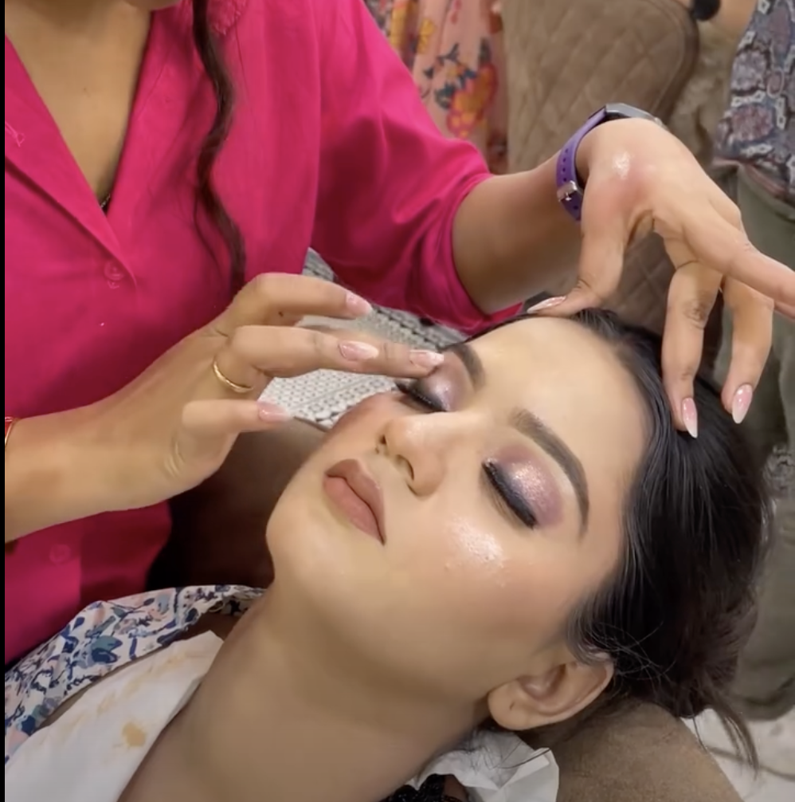
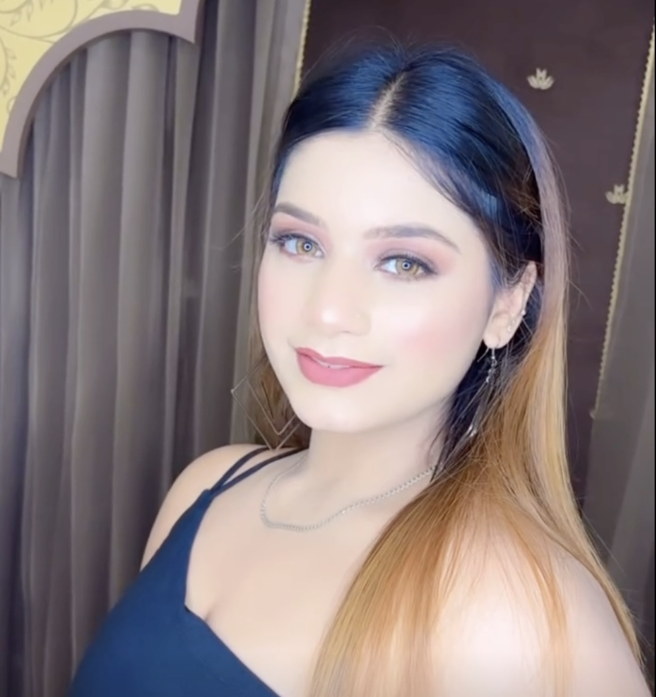
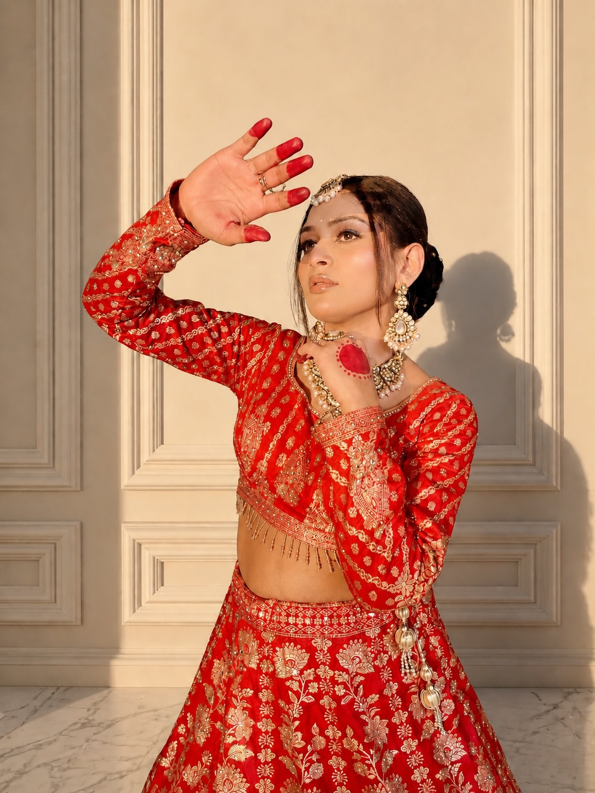
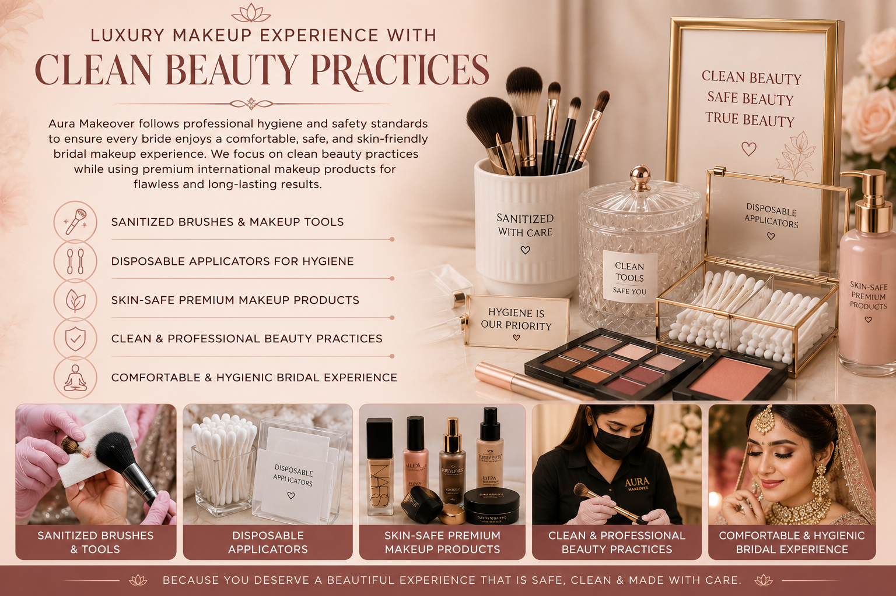

Aura Makeover
Aura Makeover
Expert bridal, engagement & party makeup with HD & airbrush finish
Based in Faridabad • Serving Delhi NCR
Book on WhatsAppAura Makeover provides professional makeup services in Faridabad and across Delhi NCR, including Gurgaon, Noida, Ghaziabad, and Delhi. We are a trusted name for bridal makeup in Faridabad and across Delhi NCR, known for delivering consistent, high-quality results.
If you are searching for the best makeup artist in Faridabad or a bridal makeup artist near you, we offer premium services tailored for every occasion. We specialize in HD makeup, airbrush makeup, engagement makeup, and party makeup, all customized to suit your skin type and personal style.
With more than 5+ years of experience, we ensure flawless, long-lasting, and camera-ready results using premium international products.
Engagement + Wedding + Reception


Book your bridal makeup appointment today!
+91 8178080166, +91 9217479633
Aura Makeover gave me the exact bridal look I had imagined — elegant, natural, and flawless. My makeup stayed perfect throughout the day and looked stunning in every photo. Amazing bridal makeup! I Highly recommend this makeup artist in Faridabad.
I was very nervous about my engagement look, but the team understood my preference perfectly. The makeup felt light, classy, and absolutely beautiful.
Very professional and punctual service. The haldi and mehndi looks were soft, fresh, and exactly what I wanted. Highly recommended.
Aura Makeover is trusted by brides across Faridabad and Delhi NCR as a leading makeup artist in Faridabad for bridal makeup, engagement makeup, and party makeup services. Our clients love our flawless, long-lasting and camera-ready results using premium products.
⭐ See what our clients say about our bridal makeup in Faridabad
⭐ Highly rated by happy brides in Faridabad and Delhi NCR
View Real Client Reviews →Aura Makeover creates personalized bridal makeup looks that enhance natural beauty, match your wedding outfit perfectly, and stay flawless throughout every ceremony. We focus on elegant, modern, and photo-ready bridal transformations for weddings, engagements, receptions, Haldi, Mehndi, and special occasions across Delhi NCR.

Every bride has a unique personality and wedding style. At Aura Makeover, we create bridal looks that complement your skin tone, jewelry, outfit, face structure, and event theme for a naturally radiant appearance.
Your bridal transformation is incomplete without the perfect hairstyle and elegant draping. We provide modern bridal buns, curls, braids, dupatta setting, and saree draping for a polished wedding look.

Aura Makeover creates fresh, glowing, and lightweight makeup looks for Haldi, Mehndi, cocktail parties, and festive occasions with a focus on comfort and long-lasting beauty.
We use premium international makeup products and maintain high hygiene standards to deliver comfortable, skin-friendly, and long-lasting bridal makeup experiences for every client.

Aura Makeover uses premium long-wear makeup techniques and professional skin preparation to create bridal looks that remain fresh, radiant, and photo-ready throughout wedding ceremonies and celebrations.
Our bridal makeup is designed to last for more than 24 hours when proper care is followed, including avoiding touching or rubbing the face. The makeup is also splash-resistant, helping brides maintain a flawless look during emotional and long wedding events.

Aura Makeover follows professional hygiene and safety standards to ensure every bride enjoys a comfortable, safe, and skin-friendly bridal makeup experience. We focus on clean beauty practices while using premium international makeup products for flawless and long-lasting results.
Travel-to-venue bridal makeup services available for weddings, engagements, receptions, and destination events in Faridabad, Delhi, Gurgaon, Noida, and nearby areas.
Book Your Bridal ConsultationAura Makeover continuously upgrades skills through professional makeup training and beauty certifications to provide brides with modern, elegant, and high-quality bridal makeup services across Delhi NCR.